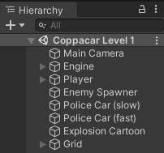
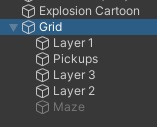
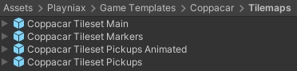
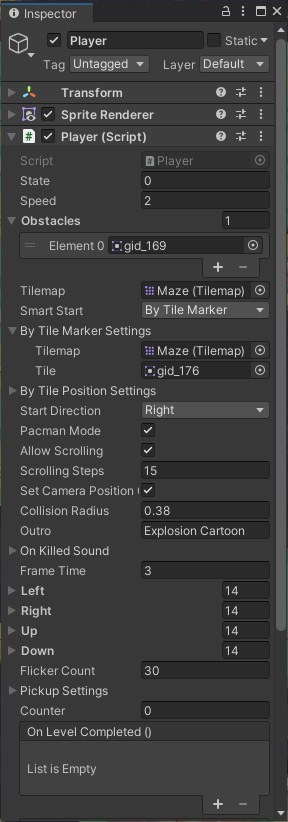
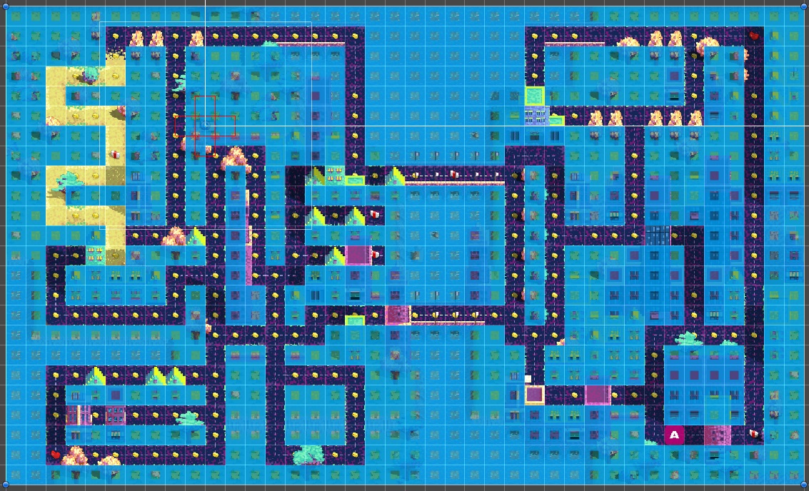
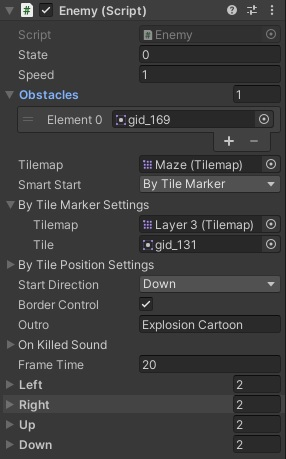

Coppacar / Getting Started
Coppacar can be found in the Assets/Playniax/Coppacar folder.The folder contains the levels and UI.
Main in-game textures can be found there also.
Coppacar uses the Playniax Frameworks like Ignition, Pyro and MazeAI and are all included.
Coppacar also uses the EasyGameUI as a level manager.
The Hierarchy
Open one of the levels and have a look at the Hierarchy:
Engine contains the Lives Manager and the Music Player.
The Lives Manager manages the number of lives the player has and you can set them by changing the Test Lives variable.
Note that the EasyGameUI will overule the Test Lives variable if present.
Player is the player with the necessary script for the player logic.
The Player GameObject also contains the virtual joypad and some UI components that display the score and number of lives.
Enemy Spawner is responsible for spawning the police cars from the police station.
There are 2 type of police cars.
Police Car (slow) and Police Car (fast) share the same script named Enemy.cs but have slightly different settings and are used by the Enemy Spawner as prefabs.
Explosion Cartoon is the particle effect for when a car is destroyed.
Note that this is not using the Unity particle system but a custom made particle engine by Playniax.
Grid is the tilemap.
The Tilemaps
Coppacar uses 5 tilemaps.
For reskinning you can remove or add as many tilemaps as you need.
4 of 5 tilemaps are visible or enabled and the tilemap named Maze is invisible or disabled.
The Maze tilemap is the used to draw or mark the actual maze.
The Tileset
Coppacar has 4 tilesets and can be found at Assets/Playniax/Coppacar/Tilemaps
The player script
The variables in the player script determine the tilemap and the obstacles, speed, start direction, pickups, etc for the player.
speed determines the speed of which the player moves.
Tilemap is set to Maze and is used to detect collisions with obstacles.
Only one obstacle (Element 0) is defined in this case gid_169 and as a virtual reference the tile looks like:
The Smart Start option has 2 modes and helps you to set the start position of the player.
In this case the player starts at a position marked by a tile in the Maze tilemap.
You can see the marker when you turn on or enable the Maze tilemap in the grid and the marker looks like:
Here is an example with the Maze tilemap turned on:

Animation
The player supports 4 directions and with each direction you can set the sprite frames.The directions are left, right, up and down and the settings for this can be found in the player script.

The first element (Element 0) is the actual car that is displayed when the player is not armored.
The other elements (in this case Element 1 to 13) are used to animate the transition from normal to armored and the last element (in this case Element 13) stays visible when the player is armored.
The animation will play in reverse once the armor is gone.
Frame Time determines the animation speed.
Pickup Settings
The player script contain a number of variables to define the pickups.
The Tilemap variable has to point to the Tilemap that contain the pickups like money, armor and extra lives.
Money Reward is used to determine how much the money is worth.
Money is used to identify the money.
Money Sound is used to determine what sound to play when you collect the money.
Shield Time determines how long the player stays armored.
Shield is used by the engine to identify the shield.
Shield Sound is used by the engine to determine what sound to play when you collect a shield to armor your car.
One Up is used to identify the extra life.
One Up Sound is used to determine what sound to play when you collect extra life.
The enemy script
The enemy script has a few of the same options as the player script like the variables obstacles, speed and start direction for example.
speed determines the speed of which the enemy or in this case the cop car moves.
Tilemap is set to Maze and is used to detect collisions with obstacles so the settings are the same as the player.
The obstacle is also the same as the player.
The enemy starts from the police station and uses gid_131 as an identifier on the Layer 3 tilemap so no invisible marker is used as the player does.
Animation
The enemy also supports 4 directions and with each direction you can set the sprite frames.The directions are left, right, up and down and the settings for this can be found in the enemy script.
The elements are animated and play in a loop.
Frame Time determines the animation speed.
The Enemy Spawner
Most of the Enemy Spawner settings should be obvious but here are some notes.Counter is set to -1 wihich means it will spawn endlessly. If you change this to 5 for example it will only spawn 5 objects.
Start Position must not be changed and can be ignored because the spawned objects have their own logic for this.
Timer is the initial pause before the spawner starts and is also used as a timer.
Delay is the interval between each spawn call.
Track Progress does nothing in this game and can be ignored.